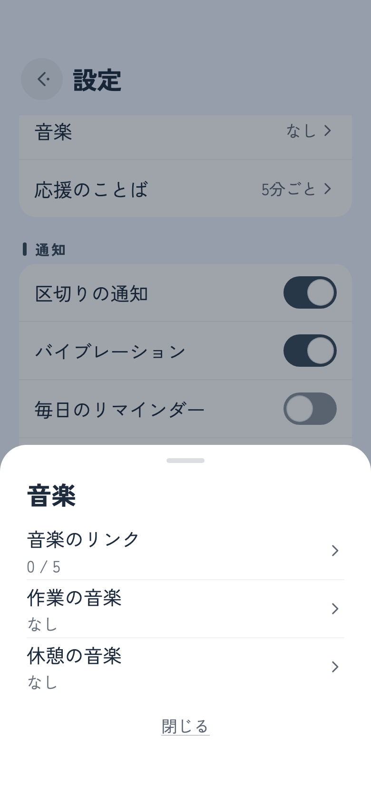
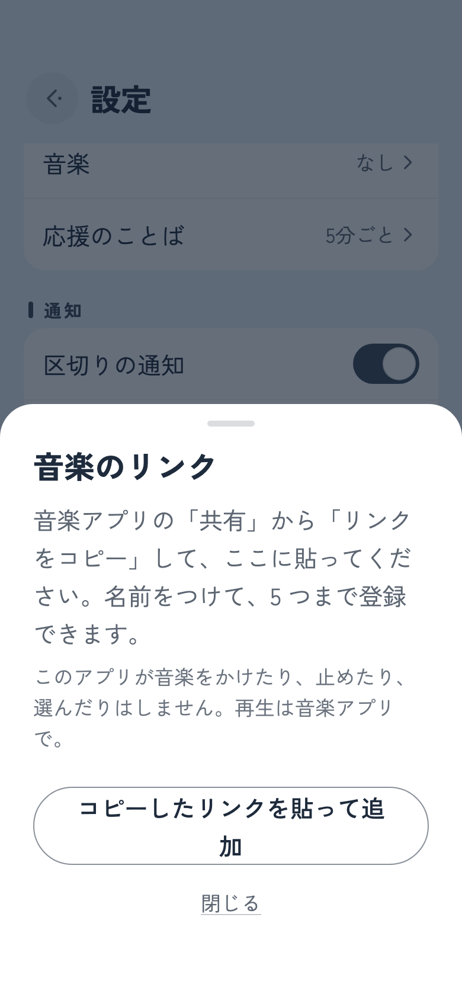
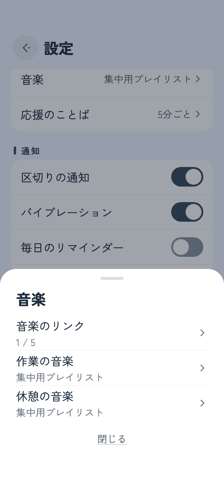
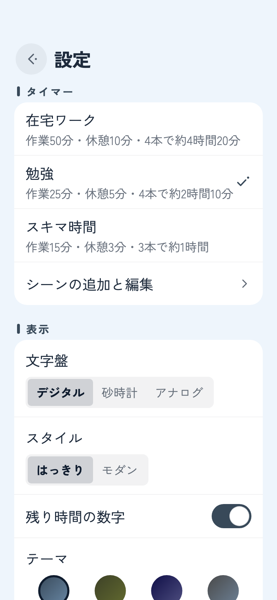

Amazon Music で、リンクをコピーする
- 作業のお供にしたいプレイリストや、アルバム、曲を開きます。
- 共有のボタンを押します。見当たらなければ、「…」のメニューの中に共有があります。
- 並んだ項目からリンクをコピーを選びます。iPhone ではコピーとだけ書かれていることもあります。
Take It Easy ヘルプ
テイクイットイージーは、音をひとつも出しません。25 分を静かに数え、ときどき短いことばを置いていく。それだけのアプリとの付き合い方を、順に書いていきます。
このアプリは BGM を流しませんし、聴いている曲を止めることもありません。音楽は、ふだん使っているアプリに任せています。そのかわり、よく聴くプレイリストのリンクを預けておけば、作業や休憩に入るところでさっと開けます。ここでは Amazon Music を例に、手順を追ってみます。



Amazon Music でなくてもかまいません。共有のメニューから「リンクをコピー」できるアプリなら、手順は同じです。プレイリストに限らず、アルバムや一曲、ラジオのリンクも預けられます。登録できるのは五つまで。作業用と休憩用で、別の音楽を選んでおくこともできます。
リンクをどう開くかは、端末が決めています。音楽アプリが入っていれば、たいていはそちらで開きます。入っていなかったり、端末の設定によっては、ブラウザで開くこともあります。開いたのに曲が始まらないときは、音楽アプリの再生ボタンを押してください。
腰を据えて働く在宅の日と、昼休みの十五分とでは、ちょうどいい区切りが違います。設定 › タイマーでシーンを選ぶと、作業、短い休憩、長い休憩、長い休憩までの本数が、まとめて入れ替わります。
名前も時間も、シーンの追加と編集から書き換えられます。自分用のシーンを足すこともでき、全部で五つまで。最初から入っている三つは、最初の時間に戻すでいつでも元どおりになります。

ボタンは三つ。あとは机に置いて、放っておいてください。
まん中の丸いボタンを押すと、作業が始まります。時間が来ると「おつかれさま！」の画面に切り替わり、そこから休憩に入れます。
左のボタンは最初からやり直し、右は次へ進むためのものです。作業なら休憩へ、休憩なら作業へ。動いている途中や一時停止中は、うっかりを防ぐために、ひと言確かめてから行います。
数字を見たくないときもあれば、ちらっと確かめたいときもあります。タイマーを押すと、残り時間の数字がしばらく出たり消えたりします。設定は変わりません。
画面のまん中のことばは、五分ほどで静かに入れ替わります。待ちきれないときは、ことばのあたりを押せば、次のひと言が出てきます。
右上の歯車から開きます。閉じるときは、左から右へ払うように。タイマーが動いているあいだ、歯車は姿を消しています。
スマホを机に立てかけて、置き時計のように使うなら、横向きが落ち着きます。
時間が来たことは、バイブレーションと通知で知らせます。アラームの音は鳴りません。
通知を使ってよいかは、はじめて再生を押したときに尋ねます。答えを待たずに、タイマーは動きはじめます。あとから変えたくなったら設定 › 通知へ。「通知が許可されていません」と出ているときは、OS の設定を開くから許可してください。通知の音は、端末の通知の設定に従います。
決めた時刻に、一日一回だけ声をかけます。その日のうちにもう一本終えていれば、黙っています。
ほかのアプリの通知が気になるなら、端末の集中モードを。iPhone はコントロールセンターの集中モードからおやすみモードか仕事、Android は画面の上から二度下へなぞってサイレント モードです。区切りの通知だけは受け取りたいなら、テイクイットイージーを許可するアプリに加えておいてください。
広告は載せていませんし、アカウントも求めません。気に入ってもらえたなら、設定 › その他 › 応援チップから、開発の励みになるチップを送れます。
チップはその都度のお支払いで、払っても機能は何も変わりません。だから、あとで復元するものもありません。
もともと、音を出さないように作っています。時間が来たことは、バイブレーションと通知で知らせます。通知が届かないときは、区切りの通知を見てみてください。
止まりません。音を扱う仕組みにはいっさい触れていないので、ほかのアプリの音楽を止めることも、音量を下げることもありません。
コピーした中に、https:// で始まるリンクが含まれていないようです。音楽アプリの共有から「リンクをコピー」をやり直して、もう一度コピーしたリンクを貼って追加を押してください。リンクの前後に紹介文がついていても、リンクの部分だけを拾って登録します。
どのアプリで開くかは、端末が決めています。音楽アプリが入っていて、そのアプリがリンクを受け取れるようになっていれば、アプリで開きます。音楽アプリを入れ直すか、端末の「デフォルトで開く」の設定を確かめてみてください。
メインの画面でタイマーが動いているあいだは、画面をつけたままにしています。止めているときや、設定、ほかのアプリを開いているときは、いつもどおり端末の設定で消えます。
進みます。終わる時刻を先に決めて、そこから数えているので、ほかのアプリを開いても、画面を消しても狂いません。時間が来れば、通知で知らせます。
設定も、登録したリンクも、これまでの記録も、端末の中にだけ置いています。くわしくはプライバシーポリシーに書きました。
使ってみての感想も、不具合の知らせも、ありがたく読んでいます。端末の機種、OS のバージョン、アプリのバージョン（設定のいちばん下にあります）を添えてもらえると、原因を探しやすくなります。